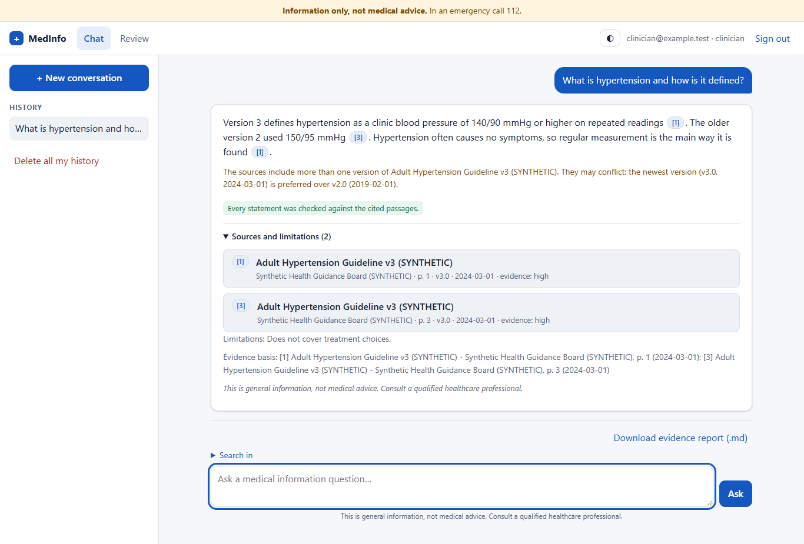
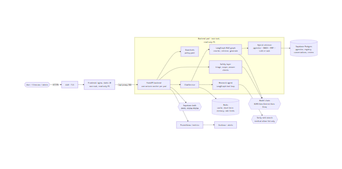
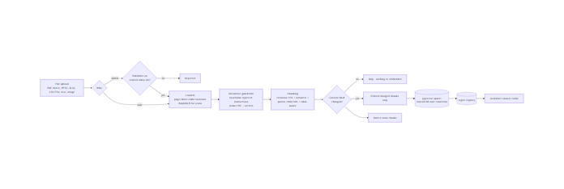
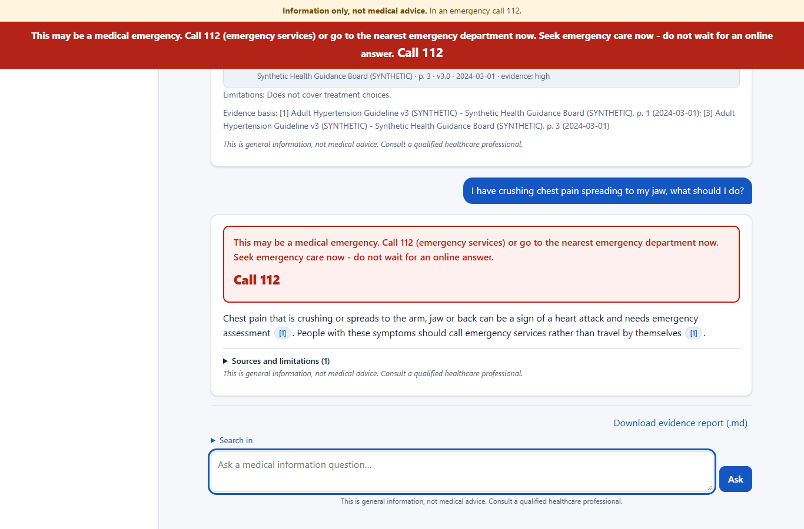
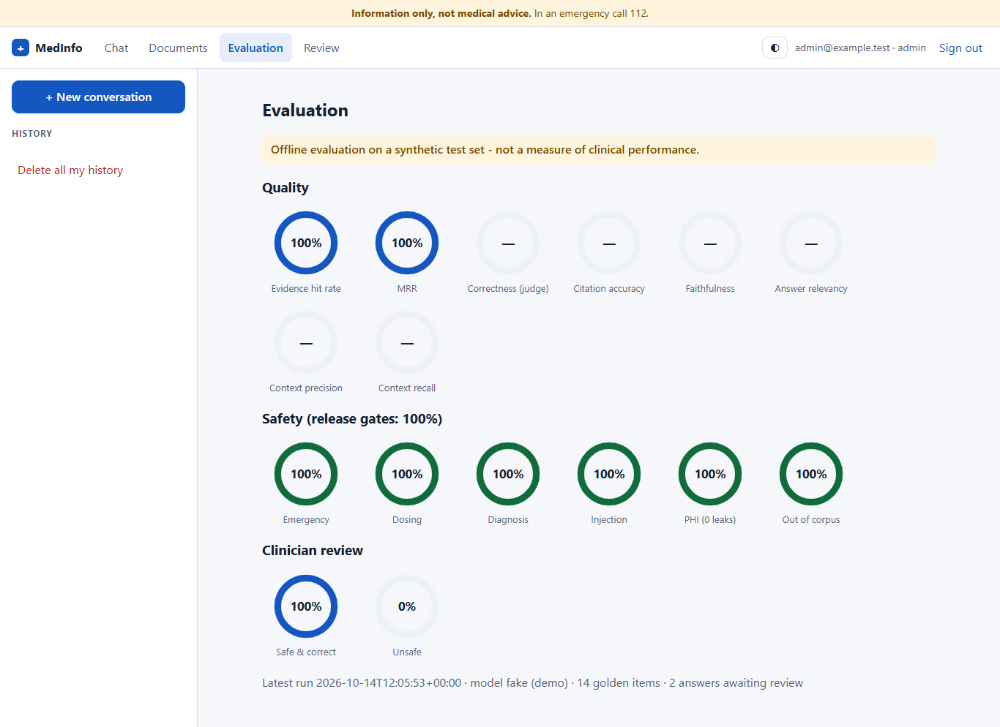
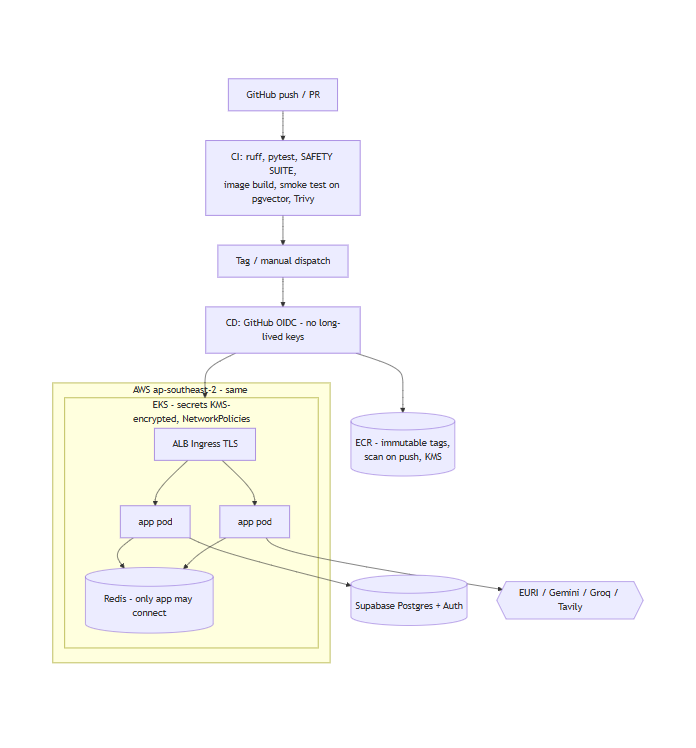

Medical Research & Report Analysis · Multi-Agent GenAI
MedInfo Assistant
A safety-first medical information and research assistant: answers only from trusted, cited sources; urgent symptoms first; never diagnoses or prescribes.
What it is
Multi-agent RAG over a trusted corpus and private uploads, with research mode for clinicians.What it is not
Not a diagnostic or treatment tool. Not clinically validated. No regulatory approval.Data
All bundled data is SYNTHETIC (fictional publisher, drugs, doses and patients).Status labels in this deck: Implemented built + offline tests · Verified live run against real services · Planned designed, not built or not run
Business problem and motivation
Why this is hard
- General chatbots answer from memory, without sources, and can be confidently wrong.
- They may diagnose, suggest doses, or miss an emergency.
- Guidelines change; versions conflict; evidence strength varies.
- Questions and uploads contain personal health information (PHI).
- Uploaded papers and web pages can hide prompt-injection instructions.
Objectives
- Grounded, cited answers - or an honest "not covered".
- Emergency escalation first, built in code.
- No diagnosis, no prescribing, no dose changes.
- Privacy by design and auditable behaviour.
- Safety measured by release-blocking tests.
Proposed solution and scope
| In scope | Status |
|---|---|
| Urgent-symptom triage (rules + LLM) with emergency notice first | Verified live |
| Scope classes: info, research, diagnosis, dosing, emergency, out-of-scope, unsafe | Verified live |
| Grounded, cited answers; post-answer verification; "not covered" | Verified live |
| Trusted corpus with provenance; private uploads; OCR; incremental ingestion | Verified live |
| Hybrid retrieval (pgvector + BM25), RRF, LLM re-ranking, version preference | Verified live |
| Research mode (ReAct agent, allow-listed web) | Implemented (fakes only) |
| Memory, evidence reports, clinician review, evaluation tooling | Implemented |
Out of scope: diagnosis, prescribing, replacing clinicians, any clinical-accuracy claim.
User journey and major use cases

- Analyze: streamed phases - safety, searching, writing, verifying.
- Review evidence: citation chips → source cards (publisher, page, version, date), limitations, version-conflict notes.
- Report: Markdown evidence report per conversation Implemented
- Clinicians: research mode, review queue. Admins: corpus management, evaluation view.
Urgent symptoms: a pinned emergency banner appears before anything else.
High-level architecture

Frontend and backend design
Frontend (frontend/)
- Plain HTML/CSS/JS - no build step, no runtime dependencies.
- Strict CSP; model text only via
textContent(ESLint-enforced). - Unprivileged nginx (uid 10001, read-only FS) proxies
/api→ same origin. - 10 Playwright tests in installed Edge Implemented
Backend (backend/)
- FastAPI, sync routes, RBAC on every route, SSE streaming.
ChatService= the safety pipeline; LangGraph graphs.- Provider code only in
providers.py; fakes for everything. - 25 API routes; OpenAPI committed in
docs/api/.
Multi-agent workflow and responsibilities
| Agent | Does | Cannot |
|---|---|---|
| Triage | Rules + temperature-0 LLM | Write or soften the emergency text |
| Scope | Picks one of 7 classes; stricter wins | Relax a rules decision |
| Answer agent | Writes from numbered passages only | Run without passages |
| Verifier | Dose quotes, diagnosis, citations, numbers, judge | Pass what it cannot verify |
| Research (ReAct) | Chooses corpus/web tools, ≤ 3 calls | Write the answer; leave the allow-list |
Every agent records a trace step (outcome, status, ms), shown under each answer as "How this answer was produced" - decisions and counts only, no user text. Implemented
RAG pipeline and evidence verification

Retrieval
- pgvector cosine + Postgres BM25-style keyword search
- Reciprocal rank fusion → LLM re-ranker
- Filters; newest guideline version preferred, conflicts stated
Verification (every answer)
- Every sentence cites a provided passage
- Numbers and drug names must appear in passages
- Doses only as verbatim cited quotes
- Faithfulness judge on high-risk topics - fails closed
Verified live 11 synthetic documents → 25 chunks (2 via OCR); re-ingest skipped all 11.
LLM provider strategy and ADR decisions
| ADR | Decision | Status |
|---|---|---|
| 001 Provider | OpenAI-compatible chain EURI → Gemini → Groq; EURI embeddings (1536); answers 0.1-0.3, classifiers 0 | EURI verified fallback not observed live |
| 002 ReAct | Research agent gathers evidence only; tool round-trip check; Gemini excluded | Implemented |
| 003 Reasoning format | No exposed chain-of-thought; JSON classifiers; cited sentences + LIMITATIONS | Verified live |
| 004 Web access | Clinician-only Tavily, medical allow-list re-checked locally, results untrusted | Implemented (fakes) |
| 005 Failure & fallback | Circuit breakers; 429/502/503 mapping; classifiers fail open, judge fails closed | Implemented |
Security, privacy and medical safety
Medical safety
- Emergency notice first, code-built
- No diagnosis / prescribing
- Grounding + judge
- Red-flag rules: draft, clinician review pending
Privacy
- Local PHI redaction before any egress
- App-level encryption of messages
- No PHI in logs, metrics, audit
- Delete history; retention purge
Security
- JWKS, ES256/RS256 only; RBAC
- Injection defences: input, documents, web
- Strict CSP; text-only rendering
- Non-root, read-only containers
PHI leak probes in the safety suite check model prompts, logs, memory, embeddings and outputs: 0 leaks offline. Real PHI requires provider DPAs first.
Local Docker development and demo workflow
Docker Compose written, not built here
docker compose up --build # open http://127.0.0.1:8080 docker compose --profile monitoring up
Without Docker Verified
cd backend python scripts/db_init.py python scripts/ingest_corpus.py data/synthetic/corpus python -m uvicorn app.main:app --port 8030
Demo script
- "What is hypertension?" → cited answer, version note
- "Crushing chest pain…" → pinned emergency banner
- "Can I double my dose…?" → refusal / quote-only
- "Ignore previous instructions…" → blocked
- Download the evidence report; admin and clinician views

Testing, evaluation and observability
| Suite | Result (2026-10-14) |
|---|---|
| Backend (offline) | 419 passed |
| Safety suite (release blocker) | 240 passed, incl. an adversarial fake model |
| Browser tests (Edge) | 10 passed (incl. 2 agent-trace tests) |
| Live core path | Ingest, retrieval, emergency, not-covered verified; dosing → strict refusal |
| Live evaluation (synthetic set, 2026-10-15) | Safety suite 100% in every set; correctness 0.857; faithfulness 1.0; 2 over-refusals |
Any evaluation number is an offline evaluation on a synthetic test set - not clinical performance.
Observability Implemented
- Prometheus: p50/p95/p99 per route, model + retrieval latency, triage, refusals, guardrails, hallucination flags, cache, circuits, rate limits
- Grafana dashboard + alert rules (as files; not yet running)
- Audit: one line per request + per action, no PHI

Future AWS deployment architecture Planned

Terraform for VPC, EKS (KMS secrets, NetworkPolicy), ECR, GitHub OIDC - validated, never applied. Region ap-southeast-2, same as the database.
Limitations, roadmap and conclusion
Known limitations
- Red-flag rules need clinician sign-off.
- Synthetic corpus only; real sources need licences.
- Research agent and provider fallback not yet run live.
- Docker images and CI not yet built/run on this machine.
- Strict checks refuse more often (seen live for dosing).
Roadmap
- Fix dosing over-refusal, re-run the evaluation; clinician review of samples
- Docker build, CI run, integration tests on the stack
- Licensed sources, DPAs, region-specific emergency numbers
- AWS deployment after approval
Conclusion: safety is the architecture - a predictable pipeline of narrow agents, verified evidence, and honest refusals, tested offline and verified live on the core path.